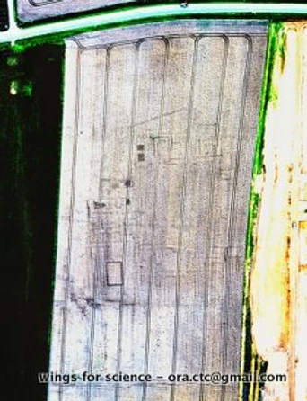
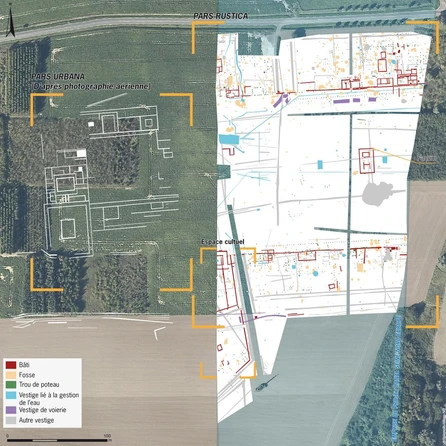
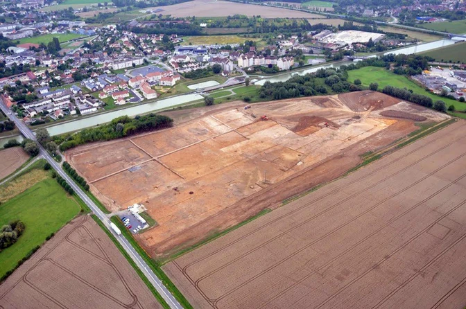
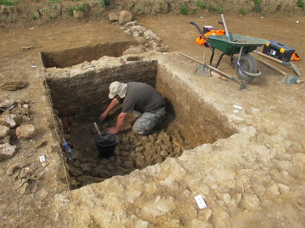
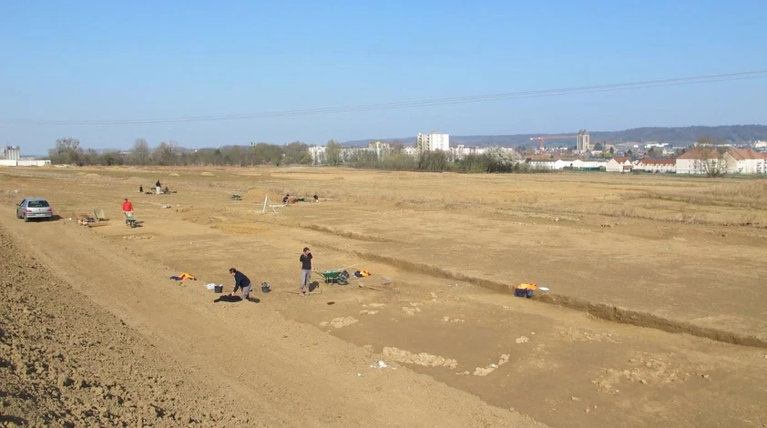
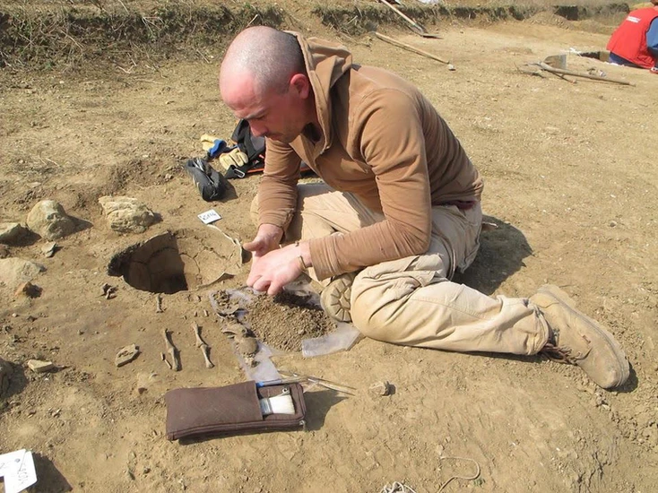
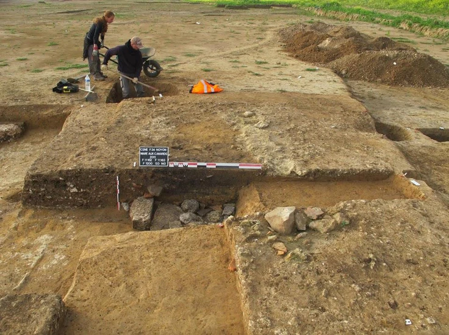
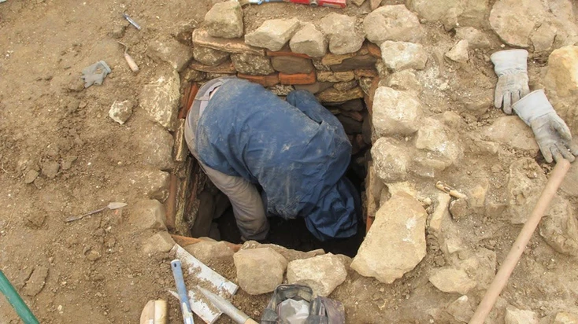
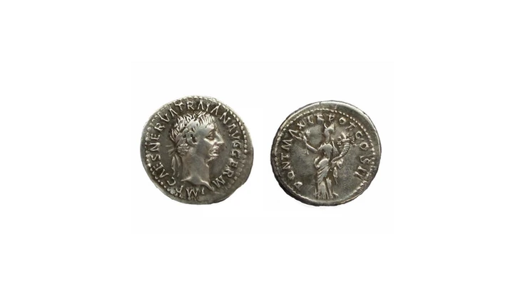

Et oui, même en France, on peut encore découvrir des vestiges archéologiques.
Mais comment est-ce possible ? Il aura fallu une bonne dose de chance, une paire d'ailes, une autre de bons yeux, et bien sûr un lieu propice à cela.
En pratique, lors d'un survol en avion léger, nous avons eu la surprise de découvrir sous nos ailes, au niveau d'un champ de blé, une sorte de plan inversé : la trace, comme sur un diapositive, de formes géométriques trop régulières pour être le fait du hasard...
On les a donc photographiées puis envoyées pour avis à nos amis archéologues.

Depuis le sol il n'était pas possible de distinguer ces formes, car nous n'avons pu les distinguer que grâce au différentiel de pousse des épis de blés, qui créaient une ombre. Sur la première photo nous avons saturé les couleurs et renforcé les contrastes pour que vous vous rendiez bien compte du résultat.

Bilan : il s'agit de vestiges archéologiques inconnus ! Et qui méritent donc d'être excavés !
Après fouille, ce vestige a été nommé : la villa de Noyon, dont les dimensions vastes (480 m de long par 270 m de large) la classent parmi les plus grandes villae identifiées dans le nord de la France ! Il semblerait que cet établissement ait connu principalement deux périodes d'occupation datées du Ier siècle.


Et nous qui pensions que le projet Des Ailes pour la Science allait débuter à l'étranger ;)


Ici, la lettre de l'INRAP, l'institut d'archéologie qui nous remercie pour notre première contribution à la science !



Pour en savoir plus sur cette villa gallo-romaine de Noyon, voici le lien vers le site de l'INRAP qui en parle mieux que nous.